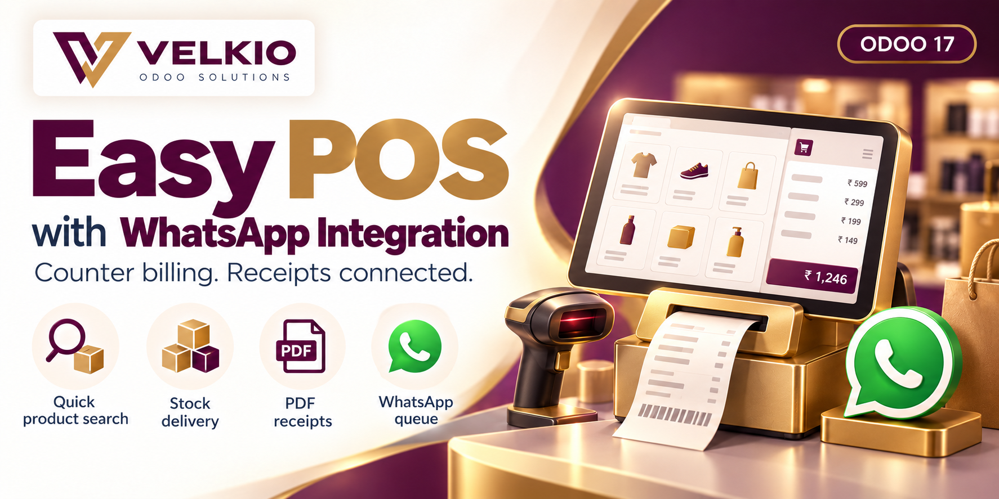
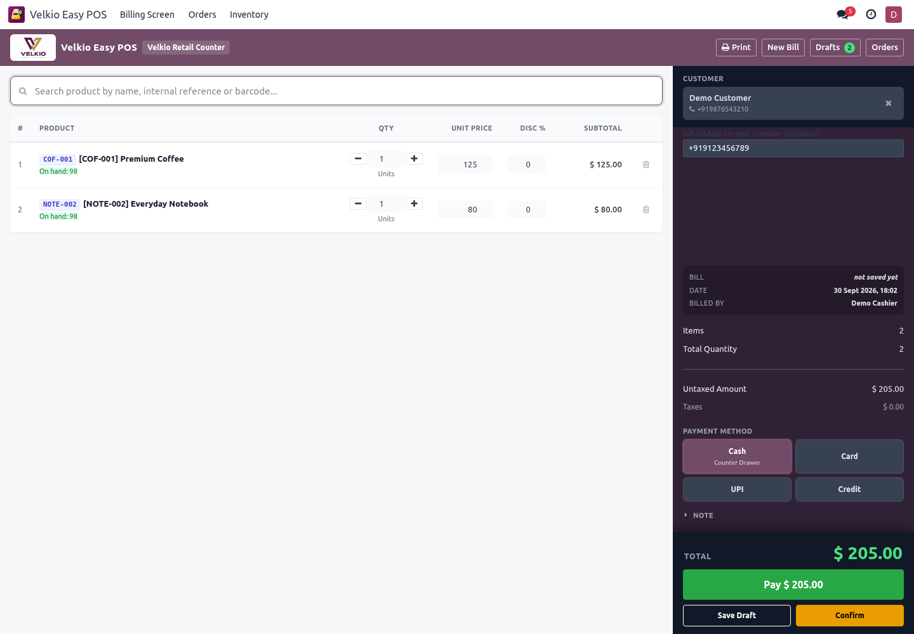

01
Quick product search
Search by product name or code with stock, unit and price in a configurable suggestion list.

VELKIO ODOO SOLUTIONS
Counter billing. Receipts connected.
A focused billing workspace for retailers and counter teams: find products, park bills, record payment methods, move stock and queue customer receipts through Odoo WhatsApp.
FEATURES
01
Search by product name or code with stock, unit and price in a configurable suggestion list.
02
Choose a customer or enter a phone number. Use a separate receipt number when the customer prefers a different destination.
03
Use customer pricing, editable sale lines and a running tax breakdown. Park a draft bill and resume it later.
04
Record Cash, Card, UPI, Bank, Cheque or Credit with the configured machine/terminal. Payment gateways and accounting entries require a separate flow.
05
Enable delivery per counter to move untracked storable products from the configured location when the bill is paid.
06
Print browser receipts or send the PDF bill through an approved WhatsApp document template. Track queued, sent and failed results.
COVERAGE
01
Bill from assigned counters, access their own bills and lines, print receipts and send paid receipts. The role includes Inventory User access for stock operations.
02
Configure counters, search columns, tender methods, receipt settings and WhatsApp sending. Review bills across cashiers within permitted companies.
03
Use Odoo 17 Enterprise WhatsApp with a configured Business account, allowed template users, an approved document template and working queue/webhook settings.
SETUP
01
Add velkio_easy_pos_with_whatsapp_integration to the addons path and install on an Odoo 17 Enterprise database. Existing original installations require migration first.
02
Give team members Velkio Easy POS / Cashier or Manager and assign allowed cashiers on each counter.
03
Choose a pricelist, payment methods and receipt layout. The default counter starts with automatic delivery disabled.
04
Choose an outgoing operation and source/customer locations before enabling delivery. Decide whether sales without sufficient stock are allowed.
05
Connect the Business account, assign the PDF document template and submit it for Meta approval. Permit intended cashiers to use the template.
06
Confirm prices, tax totals, delivery quantities, print output and receipt destination. Enable automatic WhatsApp sending only when configured.
WORKFLOW
01
Choose the counter and customer. Add products, quantities and discounts; review the tax breakdown.
02
Save a draft for later or choose a tender method and mark the bill paid. Paid bill details are locked.
03
Configured automatic delivery updates stock. Duplicate product demand is checked together when sales without stock are blocked.
04
Automatic WhatsApp sending queues the paid bill. The Send Receipt button opens the composer for manual sending. Failures are recorded on the bill.
WORKSPACE
Captured from the merged app in a disposable Odoo 17 test database.

FAQ
01
The billing counter uses its own order model and operates as a standalone app. The merged app requires Odoo Enterprise WhatsApp.
02
Payment methods record the tender selected by the cashier. Gateway transactions and accounting payments/invoices use separate integrations.
03
The paid bill remains paid; the app records a failed receipt state and error. Resolve the template/account/number issue and resend the paid receipt.
04
The automatic counter flow supports untracked storable products. Lot/serial products need an inventory delivery with tracking details.
05
The counter accepts positive sale quantities. Use the inventory return process and your accounting refund flow for returns.
06
Keep your original bills and settings. Migrate module ownership and references on a backup clone before switching to the merged provider.
TROUBLESHOOTING
01
Check the bill number, account, approved template, allowed users, Odoo queue and webhook. Queued messages have not yet confirmed delivery.
02
Check allowed cashiers, active company and access groups. Managers configure assignments.
03
Check combined product demand at the counter location. Configure stock settings or complete a tracked delivery separately.
VELKIO SUPPORT
Include the Odoo/module versions, affected counter, action and exact error when asking for help.
velkio.com · velkio.odoosolution@gmail.com